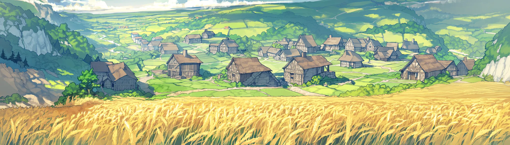
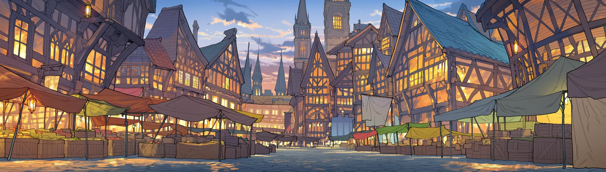
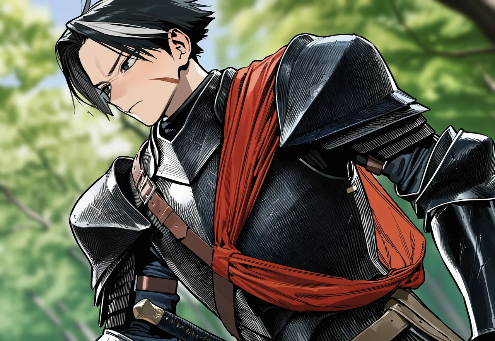
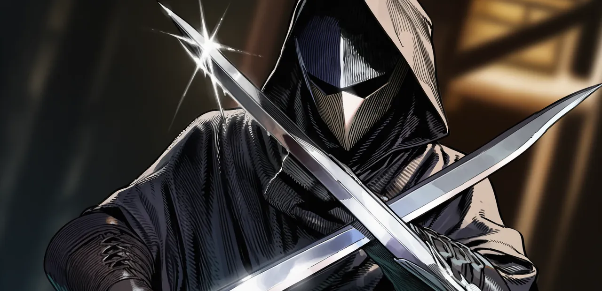
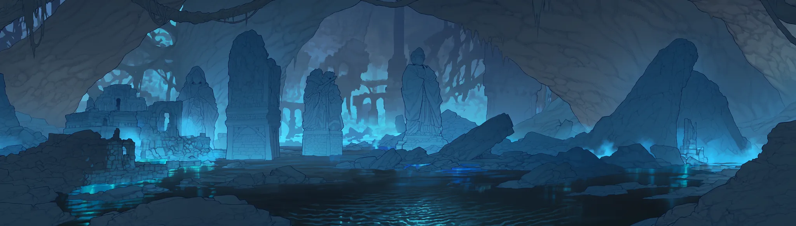

벨라트 대륙
죽어도 돌아오는 자들이 내려선 땅. 여기서 무엇을 하든, 대륙은 그걸 기억한다.
[월드]라흐나 제3환, 아직 돌파한 이방인이 없습니다.
[히든]잔영귀 · 전설. 서버 로그에는 직업명만 공개됩니다.
[랭킹]1위 줄리엣 · Lv64 월광검사
[히든]잿말잡이 · 일반. 히든직이라고 다 좋은 건 아닙니다.
[정세]북부 국경, 카르시온과 하르덴이 전면전에 가장 가까워졌습니다.
[월드]신화 등급 보유자, 서비스 이래 0명.
[정세]칼데스가 이방인 축출을 내걸고 움직이고 있습니다.
[월드]3차 전직자, 서버 전체 5명.
다이브포드에 누우면 여명기 이후 800년의 대륙이 열린다. 그곳에서 당신은 죽어도 돌아오는 이방인이다. 정해진 이야기는 없다. 당신이 한 일이 직업이 되고, 대륙에서 벌어진 일이 곧 역사가 된다.

몸은 여기,
포드 안에
월정액과 정비비를 내고 포드에 눕는다. 로그아웃하면 저린 다리와 커뮤의 여론이 기다린다.
--:--현실 시각
나는 저기,
대륙 위에
로그아웃해 있는 동안에도 대륙의 시간은 흐른다. 현실의 여섯 시간이 이곳의 하루다.
--:--벨라트 시각 · 4배속
“죽어도 돌아오는 자에게 검을 가르치는 건, 삽을 쥐여주는 것과 다르지 않다.”
플레이어. 죽으면 레벨이 깎인 채 귀환석에서 돌아온다.
대륙에 사는 사람들. 한 번 죽으면 그걸로 끝이다.
HIDDEN CLASS
당신이 한 일이 직업이 된다
무엇을 반복했는지, 어디에 오래 머물렀는지, 누구와 얽혔는지. 시스템은 그걸 읽고 그 사람만을 위한 직업을 만든다. 조건은 아무도 모른다.
신화 등급 보유자
서비스 이래 지금까지
밤에만 대장간을 돌린 사람에게 붙은 이름.
아무도 읽지 않는 고문서를 묵묵히 필사한 사람.

먼저 움직이는 사람들
이방인 다섯과 원주민 열. 모두 저마다의 사정이 있고, 당신을 기다려 주지 않는다.


WORLD EVENT
정해진 이야기는 없다.
일어난 일이 이야기가 된다.
대륙 어딘가는 늘 끓고 있다. 그게 터지면 사변이다. 함락된 마을은 폐허로 남고, 국경은 다시 그어지고, 죽은 원주민은 돌아오지 않는다.
- 전조
공지는 없다. NPC의 말투가 바뀌고, 물자가 사라지고, 시세가 튀고, 피난민이 보인다. 눈치 빠른 사람이 먼저 움직인다.
- 발발
대륙 공지와 징집령, 통행 봉쇄. 퀘스트가 한꺼번에 쏟아진다.
- 국면
전선과 거점 단위로 흘러간다. 한 사람이 거점 하나는 뒤집어도, 전쟁 전체를 혼자 바꾸지는 못한다.
- 결착
승리, 패배, 교착, 혹은 그 사이 어딘가. 당신 편이 이긴다는 보장은 없다.
- 여파
국경, 영지, 마을, 원주민의 생사, 사냥터와 시세까지. 바뀐 것은 되돌아오지 않는다.
